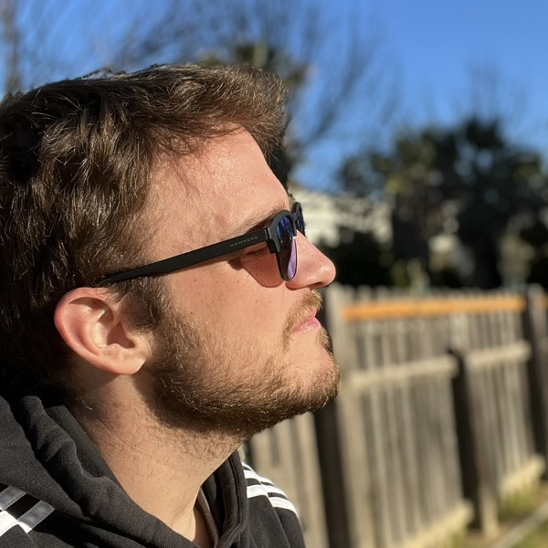

About me
Web & mobile developer

I am a web developer based in Bristol, UK, with over 7 years experience in the industry,
where most of my experience has been developing complex web applications
using Django. I've worked in projects of many shapes and colours,
as coder and as tech lead.
More recently I've been focusing a bit more on iOS development with
Swift. While I am nowhere near as proficient with it as I am with Python,
it's a really cool world I would like to be doing more of!
In my spare time, I try to do (probably too) many things, but mostly spending
time with my family, running and cooking.
Experience
February 2012 - Present
Potato London Ltd.
Senior Developer
Started as a backend developer, in Potato I became a senior
developer and got to lead multiple projects. Most of them
are projects for Google under NDA. However, some of the work
I can show:
-
Tate iOS app
While we didn't build the iOS app from scratch, we took over another agency's code,
and deliver some important updates, fixes and additions to the app. For this project
I was in charge of the iOS app.
-
TT International
A complete revamp of the website for a London based investment management company.
During my time at Potato I've also been involved with open source projects like Djangae,
and became very familiar with Google's platform.
June 2011 - February 2012
Zocolab
Co-founder
Attempt of building a mobile development agency based in south Spain. It
didn't quite work as planned, but learned very valuable lessons through the way.
June 2010 - May 2011
Yaco Sistemas
Django Developer
First full-time job, where I learned more about Python and Django. As part
of my job there, I was one of the main developers of a Django CMS called
Merengue, which we used
for projects like the University of Malaga site, and
some spinoff sites for the University of Granada.
Jul 2009 - Jan 2010
Intern
During this internship, I learned about web development using PHP and Drupal.
Those were dark times, but it was an amazing experience!